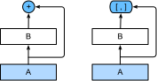
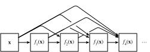

8.7. 稠密连接网络（DenseNet）¶
ResNet极大地改变了人们对深度网络中函数参数化方式的看法。DenseNet（稠密卷积网络）在某种程度上是这种思想的合乎逻辑的延伸 (Huang et al., 2017)。 DenseNet的特点在于其连接模式：每一层都与之前的所有层相连， 并且使用连结操作（而不是ResNet中的加法运算符）来保留和重用来自先前层的特征。 为了理解它是如何得到的，我们先绕道到数学中稍作停留。
import torch
from torch import nn
from d2l import torch as d2l
from mxnet import init, np, npx
from mxnet.gluon import nn
from d2l import mxnet as d2l
npx.set_np()
import jax
from flax import linen as nn
from jax import numpy as jnp
from d2l import jax as d2l
import tensorflow as tf
from d2l import tensorflow as d2l
8.7.1. 从ResNet到DenseNet¶
回想函数的泰勒展开。在\(x = 0\)处，它可以写成
关键在于，它把一个函数分解为阶数越来越高的各项。类似地，ResNet把函数分解为
也就是说，ResNet把\(f\)分解为一个简单的线性项和一个更复杂的非线性项。 如果我们想要捕捉（而不一定要相加）两项之外的信息，那会怎样？ DenseNet就是这样的解决方案之一 (Huang et al., 2017)。

图8.7.1 ResNet（左）与DenseNet（右）在跨层连接上的主要区别：使用加法还是使用连结。¶
如 图8.7.1 所示，ResNet和DenseNet的关键区别在于，后者中的输出是连结（用\([,]\)表示）而不是相加。 因此，我们对\(\mathbf{x}\)进行映射，得到依次应用越来越复杂的函数序列后它的值：
最后，所有这些函数在多层感知机中组合起来，以便再次减少特征的数量。就实现而言这相当简单： 我们不是把各项相加，而是把它们连结起来。DenseNet这一名称源于变量之间的依赖图变得相当稠密。这样一条链的最后一层与之前的所有层稠密相连。稠密连接如 图8.7.2 所示。

图8.7.2 DenseNet中的稠密连接。注意维数如何随深度增加。¶
组成DenseNet的主要组件是稠密块（dense block）和过渡层（transition layer）。前者定义如何连结输入和输出，后者控制通道数使其不至于过大， 因为展开式 \(\mathbf{x} \to \left[\mathbf{x}, f_1(\mathbf{x}), f_2\left(\left[\mathbf{x}, f_1\left(\mathbf{x}\right)\right]\right), \ldots \right]\) 可能具有很高的维数。
8.7.2. 稠密块¶
DenseNet使用了ResNet改良版的“批量规范化、激活和卷积”结构（参见 8.6节 中的练习）。 首先，我们实现这个卷积块结构。
def conv_block(num_channels):
return nn.Sequential(
nn.LazyBatchNorm2d(), nn.ReLU(),
nn.LazyConv2d(num_channels, kernel_size=3, padding=1))
def conv_block(num_channels):
blk = nn.Sequential()
blk.add(nn.BatchNorm(),
nn.Activation('relu'),
nn.Conv2D(num_channels, kernel_size=3, padding=1))
return blk
class ConvBlock(nn.Module):
num_channels: int
training: bool = True
@nn.compact
def __call__(self, X):
Y = nn.relu(nn.BatchNorm(not self.training)(X))
Y = nn.Conv(self.num_channels, kernel_size=(3, 3), padding=(1, 1))(Y)
Y = jnp.concatenate((X, Y), axis=-1)
return Y
class ConvBlock(tf.keras.layers.Layer):
def __init__(self, num_channels):
super(ConvBlock, self).__init__()
self.bn = tf.keras.layers.BatchNormalization()
self.relu = tf.keras.layers.ReLU()
self.conv = tf.keras.layers.Conv2D(
filters=num_channels, kernel_size=(3, 3), padding='same')
self.listLayers = [self.bn, self.relu, self.conv]
def call(self, x):
y = x
for layer in self.listLayers.layers:
y = layer(y)
y = tf.keras.layers.concatenate([x,y], axis=-1)
return y
一个稠密块由多个卷积块组成，每个卷积块使用相同数量的输出通道。然而，在前向传播中，我们将每个卷积块的输入和输出在通道维上连结。延迟求值（lazy evaluation）使我们能够自动调整维数。
class DenseBlock(nn.Module):
def __init__(self, num_convs, num_channels):
super(DenseBlock, self).__init__()
layer = []
for i in range(num_convs):
layer.append(conv_block(num_channels))
self.net = nn.Sequential(*layer)
def forward(self, X):
for blk in self.net:
Y = blk(X)
# Concatenate input and output of each block along the channels
X = torch.cat((X, Y), dim=1)
return X
class DenseBlock(nn.Block):
def __init__(self, num_convs, num_channels):
super().__init__()
self.net = nn.Sequential()
for _ in range(num_convs):
self.net.add(conv_block(num_channels))
def forward(self, X):
for blk in self.net:
Y = blk(X)
# Concatenate input and output of each block along the channels
X = np.concatenate((X, Y), axis=1)
return X
class DenseBlock(nn.Module):
num_convs: int
num_channels: int
training: bool = True
def setup(self):
layer = []
for i in range(self.num_convs):
layer.append(ConvBlock(self.num_channels, self.training))
self.net = nn.Sequential(layer)
def __call__(self, X):
return self.net(X)
class DenseBlock(tf.keras.layers.Layer):
def __init__(self, num_convs, num_channels):
super(DenseBlock, self).__init__()
self.listLayers = []
for _ in range(num_convs):
self.listLayers.append(ConvBlock(num_channels))
def call(self, x):
for layer in self.listLayers.layers:
x = layer(x)
return x
在下面的例子中，我们定义一个DenseBlock实例，它包含两个输出通道数为10的卷积块。
当使用有3个通道的输入时，我们将得到\(3 + 10 + 10=23\)个通道的输出。卷积块的通道数控制了输出通道数相对于输入通道数的增长。这也称为增长率（growth
rate）。
blk = DenseBlock(2, 10)
X = torch.randn(4, 3, 8, 8)
Y = blk(X)
Y.shape
blk = DenseBlock(2, 10)
X = np.random.uniform(size=(4, 3, 8, 8))
blk.initialize()
Y = blk(X)
Y.shape
blk = DenseBlock(2, 10)
X = jnp.zeros((4, 8, 8, 3))
Y = blk.init_with_output(d2l.get_key(), X)[0]
Y.shape
blk = DenseBlock(2, 10)
X = tf.random.uniform((4, 8, 8, 3))
Y = blk(X)
Y.shape
8.7.3. 过渡层¶
由于每个稠密块都会增加通道数，添加过多稠密块会导致模型过于复杂。过渡层用于控制模型的复杂度。它通过\(1\times 1\)的卷积来减少通道数。此外，它通过步幅为2的平均汇聚将高度和宽度减半。
def transition_block(num_channels):
return nn.Sequential(
nn.LazyBatchNorm2d(), nn.ReLU(),
nn.LazyConv2d(num_channels, kernel_size=1),
nn.AvgPool2d(kernel_size=2, stride=2))
def transition_block(num_channels):
blk = nn.Sequential()
blk.add(nn.BatchNorm(), nn.Activation('relu'),
nn.Conv2D(num_channels, kernel_size=1),
nn.AvgPool2D(pool_size=2, strides=2))
return blk
class TransitionBlock(nn.Module):
num_channels: int
training: bool = True
@nn.compact
def __call__(self, X):
X = nn.BatchNorm(not self.training)(X)
X = nn.relu(X)
X = nn.Conv(self.num_channels, kernel_size=(1, 1))(X)
X = nn.avg_pool(X, window_shape=(2, 2), strides=(2, 2))
return X
class TransitionBlock(tf.keras.layers.Layer):
def __init__(self, num_channels, **kwargs):
super(TransitionBlock, self).__init__(**kwargs)
self.batch_norm = tf.keras.layers.BatchNormalization()
self.relu = tf.keras.layers.ReLU()
self.conv = tf.keras.layers.Conv2D(num_channels, kernel_size=1)
self.avg_pool = tf.keras.layers.AvgPool2D(pool_size=2, strides=2)
def call(self, x):
x = self.batch_norm(x)
x = self.relu(x)
x = self.conv(x)
return self.avg_pool(x)
对上一个例子中稠密块的输出应用一个通道数为10的过渡层。这会将输出通道数减少到10，并将高度和宽度减半。
blk = transition_block(10)
blk(Y).shape
blk = transition_block(10)
blk.initialize()
blk(Y).shape
blk = TransitionBlock(10)
blk.init_with_output(d2l.get_key(), Y)[0].shape
blk = TransitionBlock(10)
blk(Y).shape
8.7.4. DenseNet模型¶
接下来，我们将构造一个DenseNet模型。DenseNet首先使用与ResNet相同的单个卷积层和最大汇聚层。
class DenseNet(d2l.Classifier):
def b1(self):
return nn.Sequential(
nn.LazyConv2d(64, kernel_size=7, stride=2, padding=3),
nn.LazyBatchNorm2d(), nn.ReLU(),
nn.MaxPool2d(kernel_size=3, stride=2, padding=1))
class DenseNet(d2l.Classifier):
def b1(self):
net = nn.Sequential()
net.add(nn.Conv2D(64, kernel_size=7, strides=2, padding=3),
nn.BatchNorm(), nn.Activation('relu'),
nn.MaxPool2D(pool_size=3, strides=2, padding=1))
return net
class DenseNet(d2l.Classifier):
num_channels: int = 64
growth_rate: int = 32
arch: tuple = (4, 4, 4, 4)
lr: float = 0.1
num_classes: int = 10
training: bool = True
def setup(self):
self.net = self.create_net()
def b1(self):
return nn.Sequential([
nn.Conv(64, kernel_size=(7, 7), strides=(2, 2), padding='same'),
nn.BatchNorm(not self.training),
nn.relu,
lambda x: nn.max_pool(x, window_shape=(3, 3),
strides=(2, 2), padding='same')
])
class DenseNet(d2l.Classifier):
def b1(self):
return tf.keras.models.Sequential([
tf.keras.layers.Conv2D(
64, kernel_size=7, strides=2, padding='same'),
tf.keras.layers.BatchNormalization(),
tf.keras.layers.ReLU(),
tf.keras.layers.MaxPool2D(
pool_size=3, strides=2, padding='same')])
然后，与ResNet使用四个由残差块组成的模块类似， DenseNet使用四个稠密块。 与ResNet一样，我们可以设置每个稠密块中使用的卷积层数。这里我们将其设为4，与 8.6节 中的ResNet-18模型保持一致。此外，我们将稠密块中卷积层的通道数（即增长率）设为32，因此每个稠密块将增加128个通道。
在ResNet中，每个模块之间通过步幅为2的残差块来减小高度和宽度。这里，我们使用过渡层将高度和宽度减半，并将通道数减半。与ResNet类似，最后连接一个全局汇聚层和一个全连接层来产生输出。
@d2l.add_to_class(DenseNet)
def __init__(self, num_channels=64, growth_rate=32, arch=(4, 4, 4, 4),
lr=0.1, num_classes=10):
super(DenseNet, self).__init__()
self.save_hyperparameters()
self.net = nn.Sequential(self.b1())
for i, num_convs in enumerate(arch):
self.net.add_module(f'dense_blk{i+1}', DenseBlock(num_convs,
growth_rate))
# The number of output channels in the previous dense block
num_channels += num_convs * growth_rate
# A transition layer that halves the number of channels is added
# between the dense blocks
if i != len(arch) - 1:
num_channels //= 2
self.net.add_module(f'tran_blk{i+1}', transition_block(
num_channels))
self.net.add_module('last', nn.Sequential(
nn.LazyBatchNorm2d(), nn.ReLU(),
nn.AdaptiveAvgPool2d((1, 1)), nn.Flatten(),
nn.LazyLinear(num_classes)))
self.net.apply(d2l.init_cnn)
@d2l.add_to_class(DenseNet)
def __init__(self, num_channels=64, growth_rate=32, arch=(4, 4, 4, 4),
lr=0.1, num_classes=10):
super(DenseNet, self).__init__()
self.save_hyperparameters()
self.net = nn.Sequential()
self.net.add(self.b1())
for i, num_convs in enumerate(arch):
self.net.add(DenseBlock(num_convs, growth_rate))
# The number of output channels in the previous dense block
num_channels += num_convs * growth_rate
# A transition layer that halves the number of channels is added
# between the dense blocks
if i != len(arch) - 1:
num_channels //= 2
self.net.add(transition_block(num_channels))
self.net.add(nn.BatchNorm(), nn.Activation('relu'),
nn.GlobalAvgPool2D(), nn.Dense(num_classes))
self.net.initialize(init.Xavier())
@d2l.add_to_class(DenseNet)
def create_net(self):
net = self.b1()
for i, num_convs in enumerate(self.arch):
net.layers.extend([DenseBlock(num_convs, self.growth_rate,
training=self.training)])
# The number of output channels in the previous dense block
num_channels = self.num_channels + (num_convs * self.growth_rate)
# A transition layer that halves the number of channels is added
# between the dense blocks
if i != len(self.arch) - 1:
num_channels //= 2
net.layers.extend([TransitionBlock(num_channels,
training=self.training)])
net.layers.extend([
nn.BatchNorm(not self.training),
nn.relu,
lambda x: nn.avg_pool(x, window_shape=x.shape[1:3],
strides=x.shape[1:3], padding='valid'),
lambda x: x.reshape((x.shape[0], -1)),
nn.Dense(self.num_classes)
])
return net
@d2l.add_to_class(DenseNet)
def __init__(self, num_channels=64, growth_rate=32, arch=(4, 4, 4, 4),
lr=0.1, num_classes=10):
super(DenseNet, self).__init__()
self.save_hyperparameters()
self.net = tf.keras.models.Sequential(self.b1())
for i, num_convs in enumerate(arch):
self.net.add(DenseBlock(num_convs, growth_rate))
# The number of output channels in the previous dense block
num_channels += num_convs * growth_rate
# A transition layer that halves the number of channels is added
# between the dense blocks
if i != len(arch) - 1:
num_channels //= 2
self.net.add(TransitionBlock(num_channels))
self.net.add(tf.keras.models.Sequential([
tf.keras.layers.BatchNormalization(),
tf.keras.layers.ReLU(),
tf.keras.layers.GlobalAvgPool2D(),
tf.keras.layers.Flatten(),
tf.keras.layers.Dense(num_classes)]))
8.7.5. 训练¶
由于这里使用的是更深的网络，本节中我们将把输入的高度和宽度从224减小到96，以简化计算。
model = DenseNet(lr=0.01)
trainer = d2l.Trainer(max_epochs=10, num_gpus=1)
data = d2l.FashionMNIST(batch_size=128, resize=(96, 96))
trainer.fit(model, data)
model = DenseNet(lr=0.01)
trainer = d2l.Trainer(max_epochs=10, num_gpus=1)
data = d2l.FashionMNIST(batch_size=128, resize=(96, 96))
trainer.fit(model, data)
model = DenseNet(lr=0.01)
trainer = d2l.Trainer(max_epochs=10, num_gpus=1)
data = d2l.FashionMNIST(batch_size=128, resize=(96, 96))
trainer.fit(model, data)
trainer = d2l.Trainer(max_epochs=10)
data = d2l.FashionMNIST(batch_size=128, resize=(96, 96))
with d2l.try_gpu():
model = DenseNet(lr=0.01)
trainer.fit(model, data)
8.7.6. 小结与讨论¶
组成DenseNet的主要组件是稠密块和过渡层。对于后者，在组合网络时我们需要保持维数可控，方法是添加再次缩减通道数的过渡层。 在跨层连接方面，与将输入和输出相加的ResNet不同，DenseNet在通道维上连结输入和输出。 尽管这些连结操作重用了特征从而获得了计算效率， 但遗憾的是，它们会导致大量的GPU内存消耗。 因此， 应用DenseNet可能需要更节省内存的实现，而这可能会增加训练时间 (Pleiss et al., 2017)。
8.7.7. 练习¶
为什么我们在过渡层中使用平均汇聚而不是最大汇聚？
DenseNet论文中提到的一个优点是其模型参数比ResNet更少。为什么会出现这种情况？
DenseNet受到批评的一个问题是其内存消耗很高。
情况真的如此吗？尝试将输入形状改为\(224\times 224\)，通过实验比较实际的GPU内存消耗。
你能想到减少内存消耗的替代方法吗？你将需要如何修改框架？
实现DenseNet论文表1中给出的各种DenseNet版本 (Huang et al., 2017)。
应用DenseNet的思想设计一个基于MLP的模型。将其应用于 5.7节 中的房价预测任务。